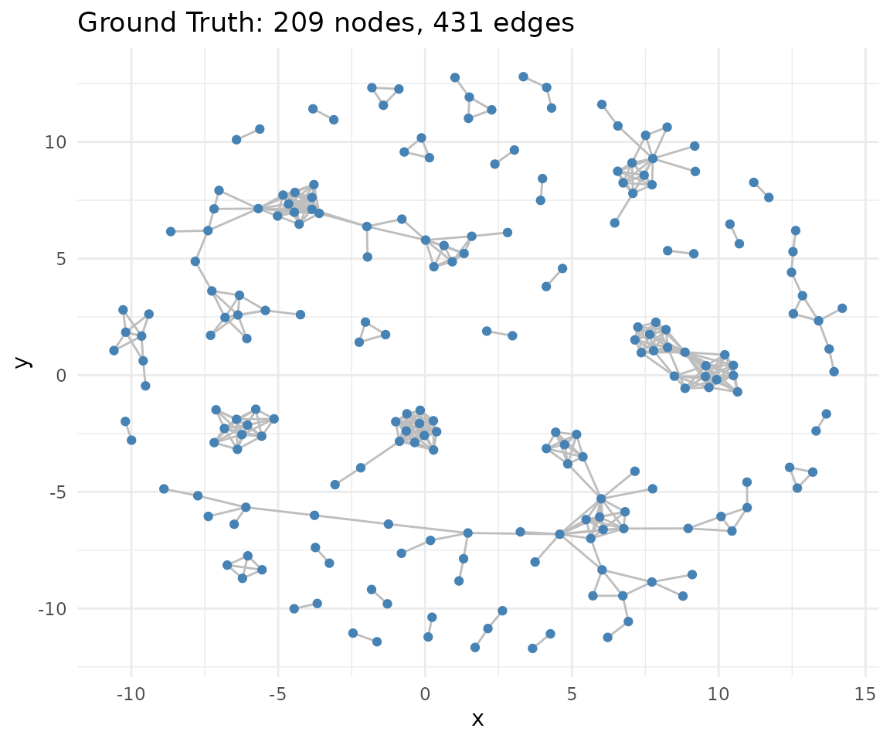
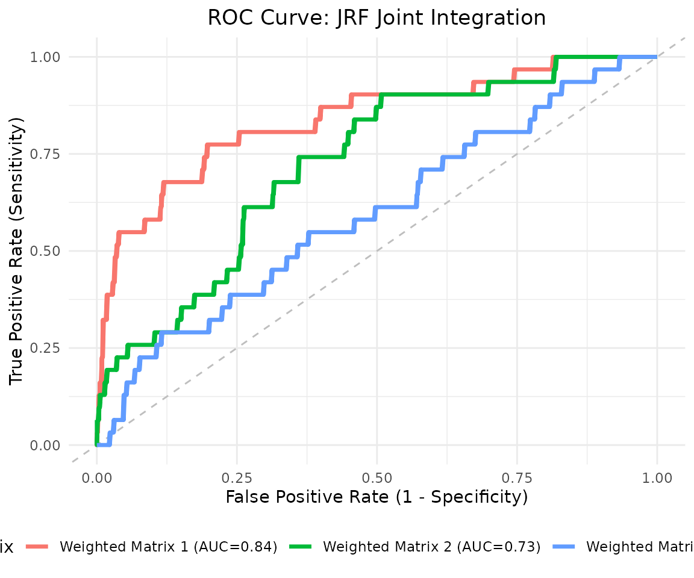
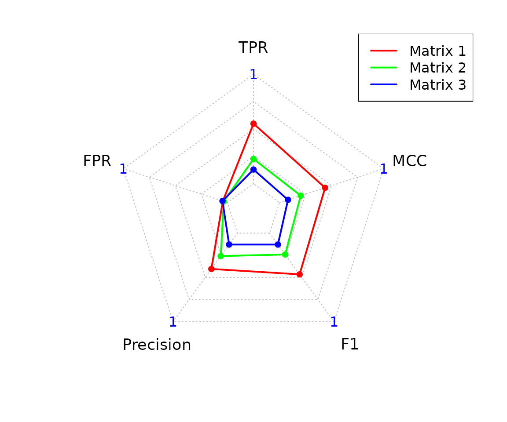
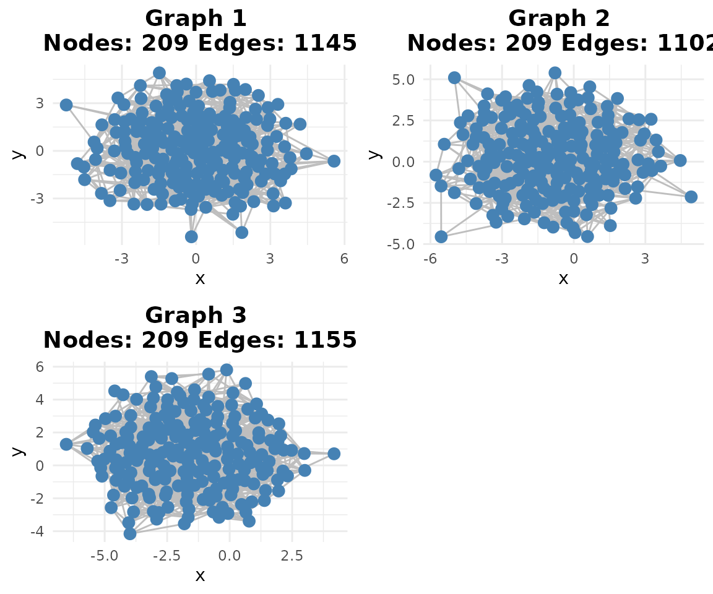
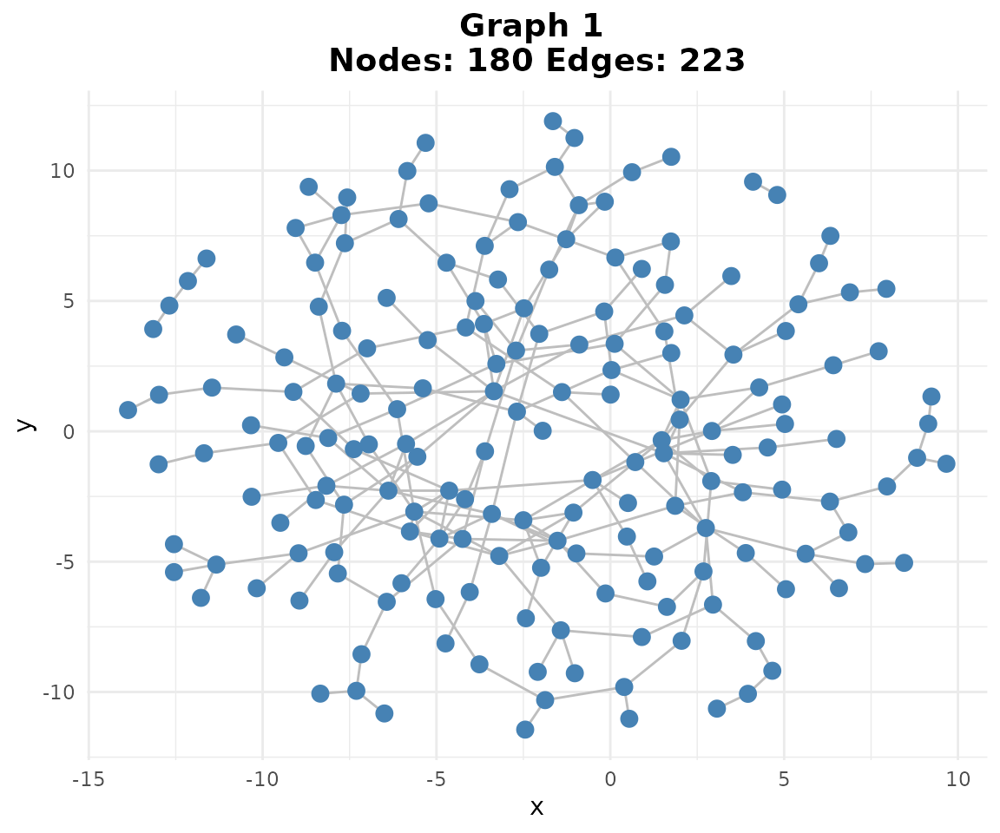

scGraphVerse Case Study: Zero-Inflated Simulation and GRN Inference
Francesco Cecere
Source:vignettes/simulation_study.Rmd
simulation_study.RmdIntroduction
scGraphVerse is a modular and extensible R package for constructing, comparing, and visualizing gene regulatory networks (GRNs) from single-cell RNAseq data. It includes several inference algorithms, utilities, and visualization functions.
Single-cell data presents unique challenges: high sparsity, batch variation, and the need to distinguish shared versus condition-specific regulation. scGraphVerse helps address these through multi-method inference consensus. It starts with SingleCellExperiment, Seurat or matrix-based objects, enabling flexible pipelines across diverse experimental setups.
Why use scGraphVerse?
While several GRN inference packages exist in Bioconductor (e.g. SCENIC), most are limited to single-method inference or lack support for multi-condition, multi-replicate, and multi-method comparisons. scGraphVerse adds value by:
- Supporting multiple inference algorithms, including GENIE3, GRNBoost2, ZILGM, PCzinb, and Joint Random Forests (JRF).
- Providing joint modeling of GRNs across multiple conditions via JRF
- Enabling benchmarking simulations from known ground-truth GRNs with customizable ZINB-based count matrix generation.
- Offering community analysis, including consensus GRNs and databases integration (e.g. PubMed and STRINGdb).
How scGraphVerse works
The typical scGraphVerse workflow begins with one or more count matrix, or objects like SingleCellExperiment or Seurat. These are passed to the core function infer_networks(), which runs the selected inference methods and returns an adjacency matrix or list of matrices.
For benchmarking or teaching purposes, synthetic datasets can be generated using zinb_simdata() based on a known adjacency matrix. This supports method comparison across early, late, and joint integration strategies using earlyj() and compare_consensus().
An end-to-end workflow, from network inference to community detection and consensus visualization, is provided in the rest of vignettes.
As intended for both high-throughput analysis and intuitive usage, scGraphVerse supports custom workflows using its modular functions.
Simulation study
In this simulation study, we use scGraphVerse to:
- Define a ground-truth regulatory network from high-confidence interactions.
- Simulate zero-inflated scRNA-seq count data that respects the ground truth.
- Infer gene regulatory networks using GENIE3.
- Evaluate performance with ROC curves, precision–recall scores, and community similarity.
- Build consensus networks and perform edge mining.
1. Defining a Ground-Truth Network from STRINGdb
We select 500 top-variable T-cell genes and fetch high-confidence edges (score ≥ 900) from STRINGdb as our ground truth.
# Note: This section requires internet connectivity for external data downloads
# To run this section, set eval=TRUE and ensure internet connectivity
# 1. Load PBMC data
pbmc_obj <- TENxPBMCData("pbmc3k")
#> see ?TENxPBMCData and browseVignettes('TENxPBMCData') for documentation
#> loading from cache
sce <- logNormCounts(pbmc_obj)
symbols_tenx <- rowData(sce)$Symbol_TENx
valid <- !is.na(symbols_tenx) & symbols_tenx != ""
sce <- sce[valid, ]
rownames(sce) <- make.unique(symbols_tenx[valid])
logcounts(sce) <- as.matrix(logcounts(sce))
colnames(sce) <- paste0("cell_", seq_len(ncol(sce)))
ref <- celldex::HumanPrimaryCellAtlasData()
pred <- SingleR(test = sce, ref = ref, labels = ref$label.main)
colData(sce)$predicted_celltype <- pred$labels
# 2. Select top 500 T-cell genes
genes <- selgene(
object = sce,
top_n = 500,
cell_type = "T_cells",
cell_type_col = "predicted_celltype",
remove_rib = TRUE,
remove_mt = TRUE
)
#> Using SCE assay 'logcounts' (log-normalized).
#> Subsetted to 1462 cells where predicted_celltype = 'T_cells'.
#> Removed mitochondrial genes matching '^MT-'.
#> Removed ribosomal genes matching '^RP[SL]'.
#> Top 500 genes selected based on mean expression.
# 3. Retrieve STRINGdb adjacency
str_res <- stringdb_adjacency(
genes = genes,
species = 9606,
required_score = 900,
keep_all_genes = FALSE
)
#> Initializing STRINGdb...
#> Mapping genes to STRING IDs...
#> Warning: we couldn't map to STRING 1% of your identifiers
#> Mapped 495 genes to STRING IDs.
#> Retrieving **physical** interactions from STRING API...
#> Found 431 STRING physical interactions.
#> Adjacency matrices constructed successfully.
wadj_truth <- str_res$weighted
adj_truth <- str_res$binary
adj_truth <- adj_truth[order(rownames(adj_truth)), order(colnames(adj_truth))]
# 5. Visualize network
gtruth <- graph_from_adjacency_matrix(adj_truth, mode = "undirected")
ggraph(gtruth, layout = "fr") +
geom_edge_link(color = "gray") +
geom_node_point(color = "steelblue") +
ggtitle(paste0(
"Ground Truth: ",
vcount(gtruth),
" nodes, ",
ecount(gtruth),
" edges"
)) +
theme_minimal()
2. Simulating Zero-Inflated Count Data
Now we’ll generate synthetic single-cell count data that respects our
ground-truth network structure. We simulate three experimental
conditions (batches) with 50 cells each, using different parameters to
model realistic batch effects and biological variability. The
zinb_simdata() function creates zero-inflated negative
binomial count data where gene expression levels are influenced by the
regulatory relationships defined in our ground-truth network.
Key simulation parameters: - mu_range:
Different mean expression levels across conditions - theta:
Overdispersion parameter (lower = more variable)
- pi: Zero-inflation probability (dropout rate) -
depth_range: Sequencing depth variation per cell
# Simulation parameters
nodes <- nrow(adj_truth)
sims <- zinb_simdata(
n = 50,
p = nodes,
B = adj_truth,
mu_range = list(c(1, 4), c(1, 7), c(1, 10)),
mu_noise = c(1, 3, 5),
theta = c(1, 0.7, 0.5),
pi = c(0.2, 0.2, 0.2),
kmat = 3,
depth_range = c(0.8 * nodes * 3, 1.2 * nodes * 3)
)
# Transpose to cells × genes
count_matrices <- lapply(sims, t)3. Inferring Networks with GENIE3
Next, we apply the GENIE3 algorithm to infer gene regulatory networks from our simulated count data. GENIE3 uses random forests to predict each gene’s expression based on all other genes, then ranks the importance of potential regulatory relationships. We process all three batches to capture condition-specific and shared regulatory patterns.
GENIE3 workflow: 1. For each target gene, build
random forest model using all other genes as predictors 2. Extract
feature importance scores as edge weights
3. Generate weighted adjacency matrices for each batch 4. Symmetrize the
matrices using mean weights to create undirected networks
networks_joint <- infer_networks(
count_matrices_list = count_matrices,
method = "GENIE3",
nCores = 1
)
# Weighted adjacency
wadj_list <- generate_adjacency(networks_joint)
# Symmetrize weights
swadj_list <- symmetrize(wadj_list, weight_function = "mean")4. ROC Curve and AUC
Now we evaluate how well our inferred networks recover the ground-truth regulatory relationships using ROC curve analysis. The ROC curve plots True Positive Rate (sensitivity) against False Positive Rate (1-specificity) across different edge weight thresholds. A perfect classifier would achieve AUC = 1.0, while random guessing gives AUC = 0.5.
ROC Analysis Steps: 1. Use continuous edge weights from symmetrized adjacency matrices 2. Compare against binary ground-truth network 3. Calculate Area Under Curve (AUC) as overall performance metric 4. Higher AUC indicates better recovery of true regulatory edges
roc_res <- plotROC(
swadj_list,
adj_truth,
plot_title = "ROC Curve: GENIE3 Network Inference",
is_binary = FALSE
)
roc_res$plot
auc_joint <- roc_res$auc4.1. Precision–Recall and Graph Visualization
To convert our continuous edge weights into binary networks, we need
to determine appropriate cutoff thresholds. The
cutoff_adjacency() function uses a data-driven approach: it
creates shuffled versions of our count data, infers networks from these
null datasets, and sets the threshold at the 95th percentile of shuffled
edge weights. This ensures we keep only edges that are much stronger
than expected by random chance.
Cutoff Method: 1. Generate shuffled count matrices
(randomize gene expression profiles) 2. Run GENIE3 on shuffled data to
get null distribution of edge weights 3. Set threshold at 95th
percentile of shuffled weights
4. Apply threshold to original networks to get binary adjacency matrices
5. Calculate precision metrics: TPR (sensitivity), FPR, Precision,
F1-score
# Binary cutoff at 95th percentile
binary_listj <- cutoff_adjacency(
count_matrices = count_matrices,
weighted_adjm_list = swadj_list,
n = 2,
method = "GENIE3",
quantile_threshold = 0.95,
nCores = 1,
debug = TRUE
)
#> [Method: GENIE3] Matrix 1 → Cutoff = 0.01235
#> [Method: GENIE3] Matrix 2 → Cutoff = 0.01277
#> [Method: GENIE3] Matrix 3 → Cutoff = 0.01287
# Precision scores
pscores_joint <- pscores(adj_truth, binary_listj)
head(pscores_joint)
#> $Statistics
#> Predicted_Matrix TP TN FP FN TPR FPR Precision F1
#> 1 Matrix 1 114 20274 1031 317 0.2645012 0.04839240 0.09956332 0.1446701
#> 2 Matrix 2 98 20301 1004 333 0.2273782 0.04712509 0.08892922 0.1278539
#> 3 Matrix 3 93 20243 1062 338 0.2157773 0.04984745 0.08051948 0.1172762
#> MCC
#> 1 0.1348684
#> 2 0.1145459
#> 3 0.1031287
#>
#> $Radar
#> $Radar$data
#> TPR Specificity Precision F1 MCC
#> Max 1.0000000 1.0000000 1.00000000 1.0000000 1.0000000
#> Min 0.0000000 0.0000000 0.00000000 0.0000000 0.0000000
#> Matrix 1 0.2645012 0.9516076 0.09956332 0.1446701 0.1348684
#> Matrix 2 0.2273782 0.9528749 0.08892922 0.1278539 0.1145459
#> Matrix 3 0.2157773 0.9501525 0.08051948 0.1172762 0.1031287
#>
#> $Radar$plot
# Network plot
plotg(binary_listj)
5. Consensus Networks and Community Similarity
Since we have three binary networks (one per experimental condition), we can create a consensus network that captures edges consistently detected across conditions. The “vote” method includes an edge in the consensus only if it appears in at least 2 out of 3 individual networks, making it more robust to condition-specific noise.
Consensus Building: - Vote method:
Edge included if present in majority of networks (≥2/3) - Union
method: Edge included if present in any network (≥1/3)
- INet method: Uses weighted evidence combination (more
sophisticated)
# Consensus matrix
consensus <- create_consensus(binary_listj, method = "vote")
plotg(list(consensus))
# Compare consensus to truth
evaluate_consensus <- compare_consensus(
consensus_matrix = consensus,
reference_matrix = adj_truth,
false_plot = FALSE
)
print(evaluate_consensus)
Community detection identifies groups of highly interconnected genes that likely share biological functions or regulatory mechanisms. We’ll detect communities in both our inferred consensus network and the ground-truth network, then compare their similarity using several metrics.
Community Detection Steps: 1. Apply Louvain
algorithm to identify network modules 2. Compare community assignments
using multiple similarity measures: - Variation of Information
(VI): Lower values = more similar - Normalized Mutual
Information (NMI): Higher values = more similar
- Adjusted Rand Index (ARI): Higher values = more
similar
Now we’ll detect communities in our ground-truth network to establish the reference community structure:
comm_truth <- community_path(adj_truth)
#> Detecting communities...
#> Running pathway enrichment...
#> 'select()' returned 1:1 mapping between keys and columns
#> Reading KEGG annotation online: "https://rest.kegg.jp/link/hsa/pathway"...
#> Reading KEGG annotation online: "https://rest.kegg.jp/list/pathway/hsa"...
#> 'select()' returned 1:1 mapping between keys and columns
#> 'select()' returned 1:1 mapping between keys and columns
#> 'select()' returned 1:1 mapping between keys and columns
#> 'select()' returned 1:1 mapping between keys and columns
#> 'select()' returned 1:1 mapping between keys and columns
#> 'select()' returned 1:1 mapping between keys and columns
#> 'select()' returned 1:1 mapping between keys and columns
#> 'select()' returned 1:1 mapping between keys and columns
#> 'select()' returned 1:1 mapping between keys and columns
#> 'select()' returned 1:1 mapping between keys and columns
#> 'select()' returned 1:1 mapping between keys and columns
#> 'select()' returned 1:1 mapping between keys and columns
# Detect communities in consensus network
comm_cons <- community_path(consensus)
#> Detecting communities...
#> Running pathway enrichment...
#> 'select()' returned 1:1 mapping between keys and columns
#> 'select()' returned 1:1 mapping between keys and columns
#> 'select()' returned 1:1 mapping between keys and columns
#> 'select()' returned 1:1 mapping between keys and columns
#> 'select()' returned 1:1 mapping between keys and columns
#> 'select()' returned 1:1 mapping between keys and columns
#> 'select()' returned 1:1 mapping between keys and columns
#> 'select()' returned 1:1 mapping between keys and columns
#> 'select()' returned 1:1 mapping between keys and columns
#> 'select()' returned 1:1 mapping between keys and columns
#> 'select()' returned 1:1 mapping between keys and columns
#> 'select()' returned 1:1 mapping between keys and columns
#> 'select()' returned 1:1 mapping between keys and columns
#> 'select()' returned 1:1 mapping between keys and columnsFinally, we’ll quantify how similar the community structures are between our inferred consensus network and the ground-truth network:
# Calculate community similarity metrics
sim_score <- community_similarity(comm_truth, list(comm_cons))

5.1. Edge Mining
Edge mining provides a detailed analysis of network reconstruction performance by categorizing each predicted edge as True Positive (TP), False Positive (FP), True Negative (TN), or False Negative (FN). This gives us insight into which specific regulatory relationships were successfully recovered.
Edge Mining Analysis: - True Positives
(TP): Correctly predicted edges that exist in ground truth -
False Positives (FP): Incorrectly predicted edges not
in ground truth
- False Negatives (FN): Missed edges that exist in
ground truth - True Negatives (TN): Correctly
identified non-edges
em <- edge_mining(list(consensus), adj_truth, query_edge_types = "TP")
sessionInfo()
#> R version 4.4.2 (2024-10-31)
#> Platform: x86_64-pc-linux-gnu
#> Running under: Ubuntu 20.04.2 LTS
#>
#> Matrix products: default
#> BLAS: /usr/lib/x86_64-linux-gnu/blas/libblas.so.3.9.0
#> LAPACK: /usr/lib/x86_64-linux-gnu/lapack/liblapack.so.3.9.0
#>
#> locale:
#> [1] LC_CTYPE=en_US.UTF-8 LC_NUMERIC=C
#> [3] LC_TIME=it_IT.UTF-8 LC_COLLATE=en_US.UTF-8
#> [5] LC_MONETARY=it_IT.UTF-8 LC_MESSAGES=en_US.UTF-8
#> [7] LC_PAPER=it_IT.UTF-8 LC_NAME=C
#> [9] LC_ADDRESS=C LC_TELEPHONE=C
#> [11] LC_MEASUREMENT=it_IT.UTF-8 LC_IDENTIFICATION=C
#>
#> time zone: Europe/Rome
#> tzcode source: system (glibc)
#>
#> attached base packages:
#> [1] stats4 stats graphics grDevices utils datasets methods
#> [8] base
#>
#> other attached packages:
#> [1] celldex_1.16.0 SingleR_2.8.0
#> [3] org.Hs.eg.db_3.20.0 AnnotationDbi_1.68.0
#> [5] scater_1.34.1 scuttle_1.16.0
#> [7] TENxPBMCData_1.24.0 HDF5Array_1.34.0
#> [9] rhdf5_2.50.2 DelayedArray_0.32.0
#> [11] SparseArray_1.6.2 S4Arrays_1.6.0
#> [13] abind_1.4-8 Matrix_1.7-3
#> [15] SingleCellExperiment_1.28.1 SummarizedExperiment_1.36.0
#> [17] Biobase_2.66.0 GenomicRanges_1.58.0
#> [19] GenomeInfoDb_1.42.3 IRanges_2.40.1
#> [21] S4Vectors_0.44.0 BiocGenerics_0.52.0
#> [23] MatrixGenerics_1.18.1 matrixStats_1.5.0
#> [25] ggraph_2.2.1 ggplot2_3.5.2
#> [27] igraph_2.1.4 scGraphVerse_0.99.0
#> [29] BiocStyle_2.34.0
#>
#> loaded via a namespace (and not attached):
#> [1] graph_1.84.1 hash_2.2.6.3
#> [3] ica_1.0-3 plotly_4.11.0
#> [5] Formula_1.2-6 zlibbioc_1.52.0
#> [7] tidyselect_1.2.1 bit_4.6.0
#> [9] doParallel_1.0.17 lattice_0.20-44
#> [11] blob_1.2.4 stringr_1.5.1
#> [13] parallel_4.4.2 hdrcde_3.4
#> [15] png_0.1-8 plotrix_3.8-4
#> [17] cli_3.6.5 ggplotify_0.1.2
#> [19] askpass_1.2.1 goftest_1.2-3
#> [21] pkgdown_2.1.3 textshaping_1.0.1
#> [23] purrr_1.1.0 BiocNeighbors_2.0.1
#> [25] fdatest_2.1.1 uwot_0.2.3
#> [27] curl_6.4.0 deSolve_1.40
#> [29] mime_0.13 evaluate_1.0.4
#> [31] tidytree_0.4.6 gsubfn_0.7
#> [33] stringi_1.8.7 pROC_1.19.0.1
#> [35] backports_1.5.0 desc_1.4.3
#> [37] multinet_4.2.2 XML_3.99-0.18
#> [39] Exact_3.3 httpuv_1.6.16
#> [41] magrittr_2.0.3 clusterProfiler_4.14.6
#> [43] rappdirs_0.3.3 splines_4.4.2
#> [45] mclust_6.1.1 gbm_2.2.2
#> [47] rainbow_3.8 pcaPP_2.0-5
#> [49] rentrez_1.2.4 dplyr_1.1.4
#> [51] networkD3_0.4.1 ggbeeswarm_0.7.2
#> [53] sctransform_0.4.2 rootSolve_1.8.2.4
#> [55] DBI_1.2.3 jquerylib_0.1.4
#> [57] reactome.db_1.89.0 withr_3.0.2
#> [59] class_7.3-19 systemfonts_1.2.3
#> [61] enrichplot_1.26.6 lmtest_0.9-40
#> [63] tidygraph_1.3.1 BiocManager_1.30.26
#> [65] htmlwidgets_1.6.4 fs_1.6.6
#> [67] ggrepel_0.9.6 labeling_0.4.3
#> [69] cellranger_1.1.0 lmom_3.2
#> [71] reticulate_1.43.0 robin_2.1.0
#> [73] zoo_1.8-14 XVector_0.46.0
#> [75] knitr_1.50 UCSC.utils_1.2.0
#> [77] mpath_0.4-2.26 foreach_1.5.2
#> [79] fda_6.3.0 patchwork_1.3.1
#> [81] caTools_1.18.3 grid_4.4.2
#> [83] data.table_1.17.8 ggtree_3.14.0
#> [85] R.oo_1.27.1 RSpectra_0.16-2
#> [87] irlba_2.3.5.1 alabaster.schemas_1.6.0
#> [89] fastDummies_1.7.5 gridGraphics_0.5-1
#> [91] DescTools_0.99.60 lazyeval_0.2.2
#> [93] yaml_2.3.10 survival_3.2-11
#> [95] scattermore_1.2 BiocVersion_3.20.0
#> [97] crayon_1.5.3 RcppAnnoy_0.0.22
#> [99] RColorBrewer_1.1-3 tidyr_1.3.1
#> [101] progressr_0.15.1 tweenr_2.0.3
#> [103] later_1.4.2 ggridges_0.5.6
#> [105] fds_1.8 codetools_0.2-18
#> [107] Seurat_5.3.0 KEGGREST_1.46.0
#> [109] Rtsne_0.17 WeightSVM_1.7-16
#> [111] shape_1.4.6.1 ReactomePA_1.50.0
#> [113] filelock_1.0.3 INetTool_0.1.1
#> [115] data.tree_1.1.0 sqldf_0.4-11
#> [117] pkgconfig_2.0.3 spatstat.univar_3.1-4
#> [119] ggpubr_0.6.1 aplot_0.2.8
#> [121] alabaster.base_1.6.1 spatstat.sparse_3.1-0
#> [123] ape_5.8-1 viridisLite_0.4.2
#> [125] xtable_1.8-4 car_3.1-3
#> [127] plyr_1.8.9 httr_1.4.7
#> [129] tools_4.4.2 globals_0.18.0
#> [131] SeuratObject_5.1.0 beeswarm_0.4.0
#> [133] broom_1.0.9 nlme_3.1-152
#> [135] dbplyr_2.5.0 ExperimentHub_2.14.0
#> [137] r2r_0.1.2 digest_0.6.37
#> [139] qpdf_1.4.1 numDeriv_2016.8-1.1
#> [141] bookdown_0.43 farver_2.1.2
#> [143] tzdb_0.5.0 reshape2_1.4.4
#> [145] ks_1.15.1 yulab.utils_0.2.0
#> [147] viridis_0.6.5 rpart_4.1-15
#> [149] glue_1.8.0 cachem_1.1.0
#> [151] BiocFileCache_2.14.0 polyclip_1.10-7
#> [153] generics_0.1.4 Biostrings_2.74.1
#> [155] mvtnorm_1.3-3 proto_1.0.0
#> [157] parallelly_1.45.1 pscl_1.5.9
#> [159] bst_0.3-24 RcppHNSW_0.6.0
#> [161] ragg_1.4.0 ScaledMatrix_1.14.0
#> [163] carData_3.0-5 pbapply_1.7-4
#> [165] httr2_1.1.2 glmnet_4.1-10
#> [167] spam_2.11-1 gson_0.1.0
#> [169] STRINGdb_2.18.0 graphlayouts_1.2.2
#> [171] gtools_3.9.5 readxl_1.4.5
#> [173] alabaster.se_1.6.0 ggsignif_0.6.4
#> [175] gridExtra_2.3 shiny_1.11.1
#> [177] GenomeInfoDbData_1.2.13 R.utils_2.13.0
#> [179] rhdf5filters_1.18.1 RCurl_1.98-1.17
#> [181] memoise_2.0.1 rmarkdown_2.29
#> [183] fmsb_0.7.6 scales_1.4.0
#> [185] R.methodsS3_1.8.2 gld_2.6.7
#> [187] gypsum_1.2.0 future_1.67.0
#> [189] RANN_2.6.2 spatstat.data_3.1-8
#> [191] rstudioapi_0.17.1 cluster_2.1.2
#> [193] perturbR_0.1.3 spatstat.utils_3.1-5
#> [195] hms_1.1.3 fitdistrplus_1.2-4
#> [197] cowplot_1.2.0 colorspace_2.1-1
#> [199] rlang_1.1.6 GENIE3_1.28.0
#> [201] sparseMatrixStats_1.18.0 DelayedMatrixStats_1.28.1
#> [203] dotCall64_1.2 ggforce_0.5.0
#> [205] ggtangle_0.0.7 xfun_0.53
#> [207] alabaster.matrix_1.6.1 e1071_1.7-16
#> [209] iterators_1.0.14 GOSemSim_2.32.0
#> [211] tibble_3.3.0 treeio_1.30.0
#> [213] Rhdf5lib_1.28.0 readr_2.1.5
#> [215] bitops_1.0-9 promises_1.3.3
#> [217] RSQLite_2.4.2 qvalue_2.38.0
#> [219] fgsea_1.32.4 proxy_0.4-27
#> [221] GO.db_3.20.0 compiler_4.4.2
#> [223] alabaster.ranges_1.6.0 forcats_1.0.0
#> [225] distributions3_0.2.2 boot_1.3-28
#> [227] beachmat_2.22.0 graphite_1.52.0
#> [229] listenv_0.9.1 Rcpp_1.1.0
#> [231] BiocSingular_1.22.0 AnnotationHub_3.14.0
#> [233] tensor_1.5.1 MASS_7.3-65
#> [235] BiocParallel_1.40.2 spatstat.random_3.4-1
#> [237] R6_2.6.1 fastmap_1.2.0
#> [239] fastmatch_1.1-6 rstatix_0.7.2
#> [241] vipor_0.4.7 ROCR_1.0-11
#> [243] rsvd_1.0.5 gtable_0.3.6
#> [245] KernSmooth_2.23-20 miniUI_0.1.2
#> [247] deldir_2.0-4 htmltools_0.5.8.1
#> [249] bit64_4.6.0-1 spatstat.explore_3.5-2
#> [251] lifecycle_1.0.4 sass_0.4.10
#> [253] vctrs_0.6.5 spatstat.geom_3.5-0
#> [255] DOSE_4.0.1 haven_2.5.5
#> [257] ggfun_0.2.0 sp_2.2-0
#> [259] future.apply_1.20.0 pracma_2.4.4
#> [261] bslib_0.9.0 pillar_1.11.0
#> [263] gplots_3.2.0 jsonlite_2.0.0
#> [265] expm_1.0-0 chron_2.3-62